第1轮普通输入试玩
第10回合完成
胜利并完成对应战后操作；480次按键记录。
逐一核对八场战斗、七处据点及群岛航线。本章发生在海岛、船只、港口、古道与海洞；草坡、沙岸、木船甲板、室内木地、露天石铺与室内岩地应各有明确用途。黑昼按剧情阶段和地理位置衔接，不照搬第一章雪景。
六张战斗图作必要修正；海灯岛F24与断航古道F26已经合理，保持原样。保留整体构图、部署、敌人、任务位置、通行规则、剧情和现有动画。
第二章回到半年前，前段西大陆沿用第一章日返前的冬景，即使存档已经保存第一章完成状态也不会提前转暖。押送舰战后正常安置伤者、确认后续航行时，对应西大陆日返与东群岛黑昼同时发生：西大陆转暖，礁岛光线偏冷，海灯岛最暗，军港与据点保持中等冷暗。西侧古道位于局部神幕边缘，保留自然光。全图总览与局部行军画面使用同一故事阶段。下方是两个剧情时段的对照，雪线缩小表示日返后的西大陆转暖；不会仅因切换章节就回退。原节点、道路和解锁数据逐字节保持。

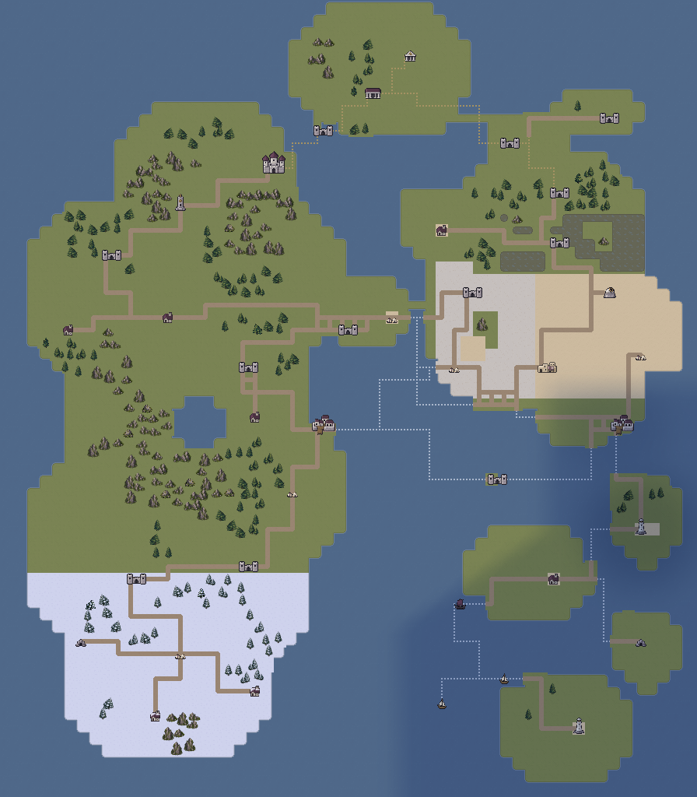
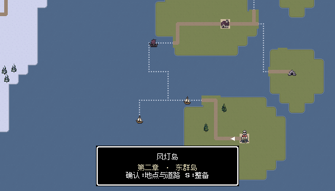
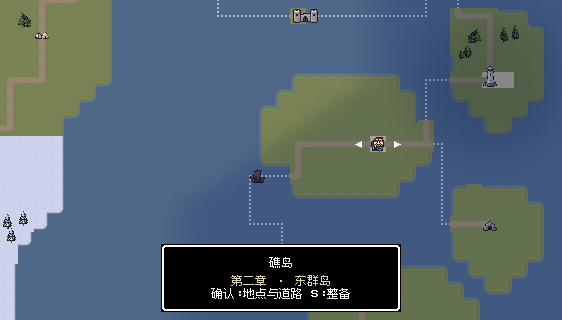
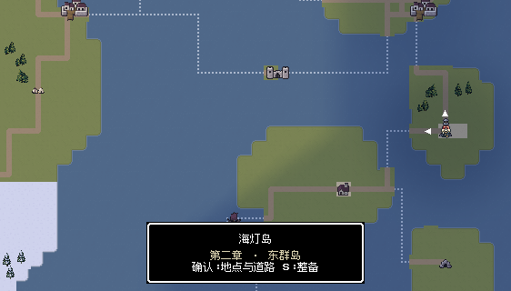
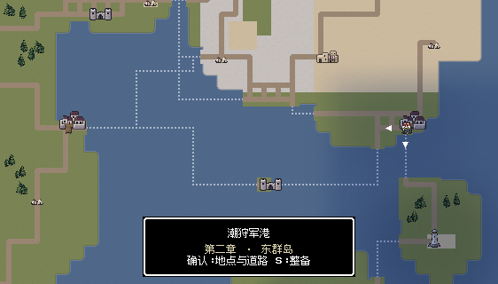
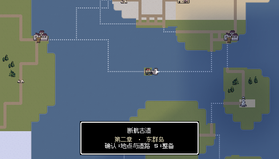
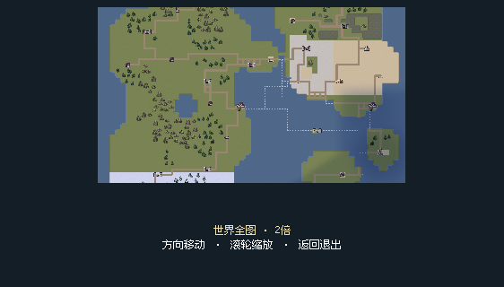
船体、双跳板、海水和后甲板布局原本合理。将船医恢复格的石质铺面改成木板，船员休息舱换同尺寸木质甲板舱，避免船上出现陆地小屋；恢复功能与站位保持。
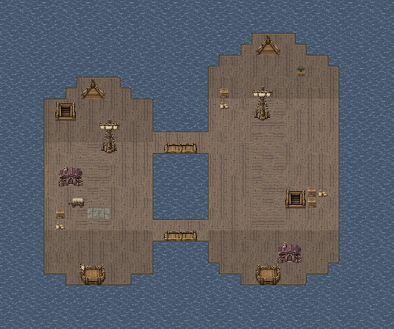
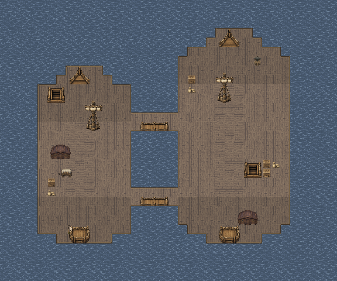
露天甲板保留旧木板，两间去顶囚舱改为干燥室内木地，开门后的门槛同步使用木地。船舱外形与船医区修正；救援门、三名俘虏、洛德及接应位置均保持。

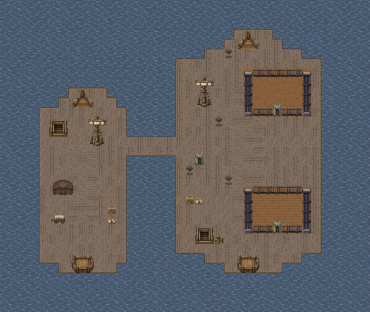
胜利并完成对应战后操作；1,255次按键记录。
胜利并完成对应战后操作；1,026次按键记录。
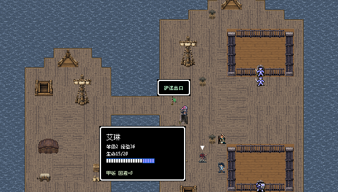
沙岸、草坡、林崖与渔村的空间关系成立，地面与布局保留。剧情已出现黑昼与异常魔物，因此环境改成较轻的冷暗光，与岸上据点和大地图一致。

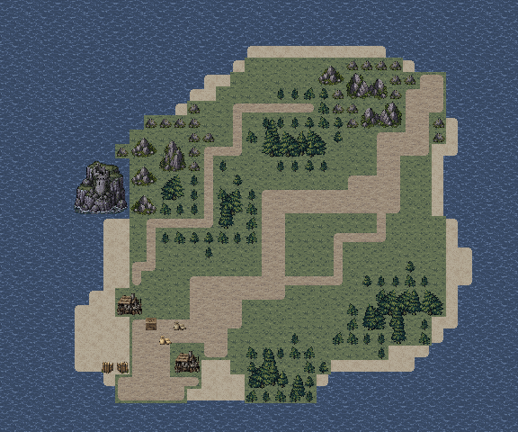
现有石制灯庭、草地边缘、沙岸和黑昼冷光已经符合剧情，地图文件与原生画面保持。战后据点原来的大片草地改成对应石庭，解决战场与据点的材质落差。

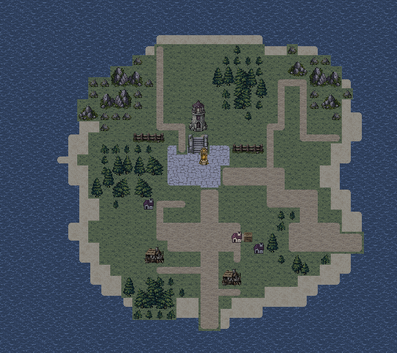
露天仓院保留粗石铺面，东侧牢室与开门门槛改成室内石板。环境光同步黑昼中的军港据点，不再在离开海灯岛后突然恢复明亮白昼。
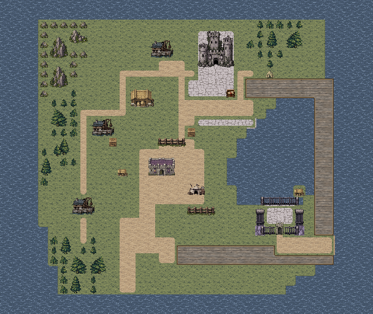
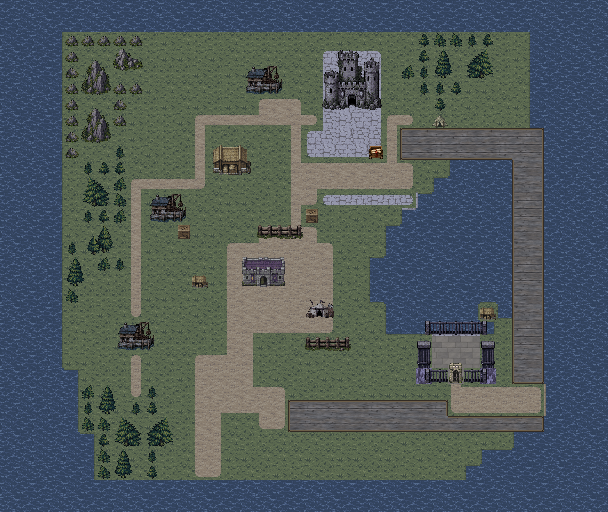
胜利并完成对应战后操作；1,163次按键记录。
胜利并完成对应战后操作；1,098次按键记录。
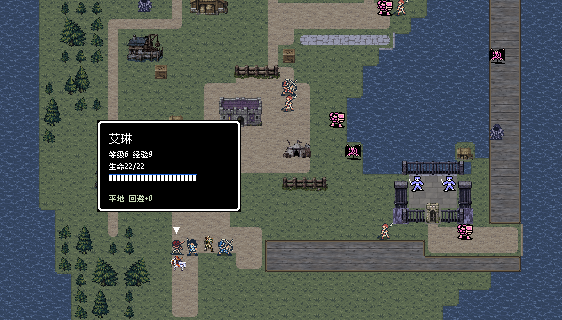
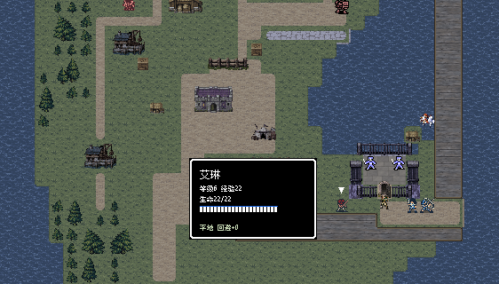
石质古道、草坡、两条海上通道和接应石门关系成立，保持原文件与画面。这里穿过局部神幕前往西岸，按原剧情保留自然光；大地图在古道周围也恢复明亮。

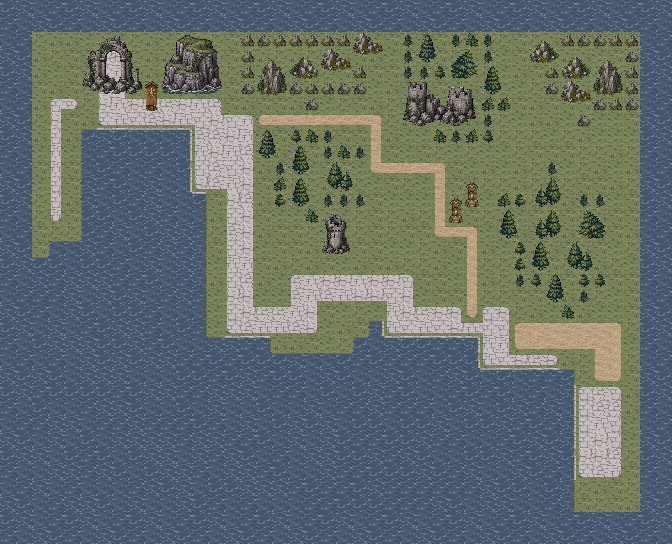
胜利并完成对应战后操作；1,080次按键记录。
胜利并完成对应战后操作；1,125次按键记录。
双船、跳板和接应沙岸符合救援场景，保留原材质与行动路线。船员休息舱换成同尺寸甲板舱，让船体读法与F21/F22一致。

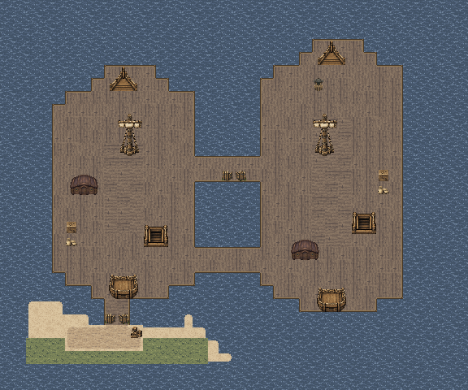
室内海洞的明黄色户外土路改成磨损灰岩，保留较暗的潮湿沉积厅与潮池。主路仍可辨认，岩壁、拱门、藏身区、遗物与出口位置不变。
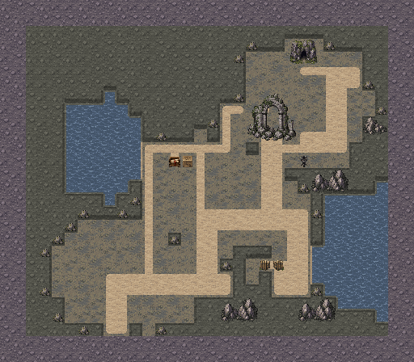
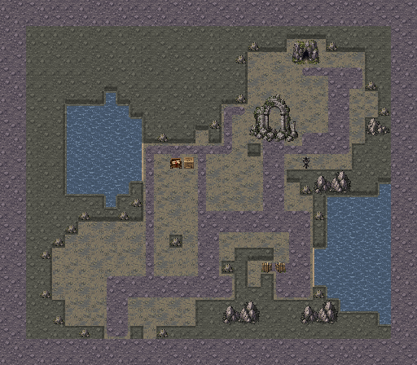
H21—H26的海上出口补接驳船，短木栈明确通向船只；H22/H23木甲板补连续船缘，H25航灯前场改为与战场一致的石庭，H26岸侧仓院使用仓库外观。H24和黑昼后回访船团的光照同步。H27西岸广场保持原样。
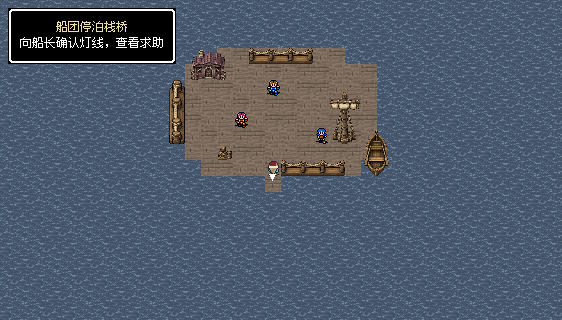
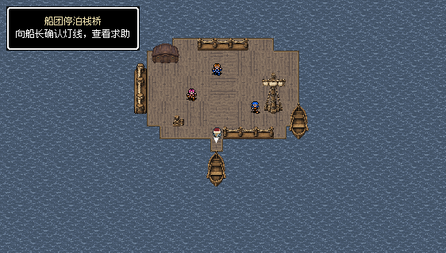
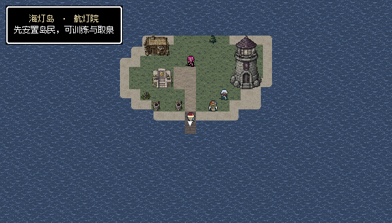
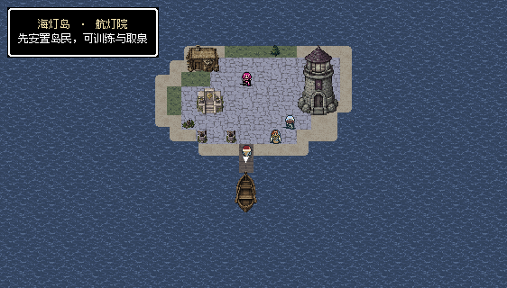
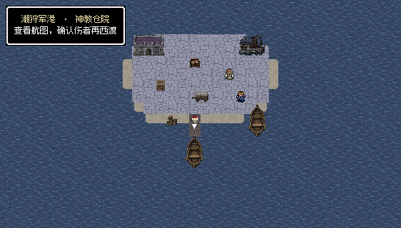
七据点的地面通行、碰撞、出入口和全部剧情对象位置保持；28处对象完成普通输入确认。
八张关卡各完成两轮最终通关，共16场、13,382次按键，涵盖俘虏撤离、航灯守护、引航者救援、遗物取回、居民船通行与对应战后剧情。表内每场均从真实记录隔离副本，经普通整备、当前地图入口重开；未修改属性、随机结果或强制胜利。
| 地图 | 第一轮 | 第二轮 |
|---|---|---|
| F21 | 10回合 | 10回合 |
| F22 | 30回合 | 40回合 |
| F23 | 12回合 | 12回合 |
| F24 | 11回合 | 13回合 |
| F25 | 17回合 | 17回合 |
| F26 | 16回合 | 15回合 |
| S21 | 9回合 | 12回合 |
| S22 | 13回合 | 16回合 |
从本轮第一章真实完成记录接续八战至第三章。F22在第91回合驾驶停滞后，按真实两格法术射程续行至第104回合胜利；F23保留首次败北，一次正常整备重试后通关。濒死成员换装和缺席的可选私人对话由测试驾驶略过，随后从原世界／据点记录继续，没有重打前关。全程保留米蕾、卡洛伤情及西队真实成长，不是一次无重试全通。
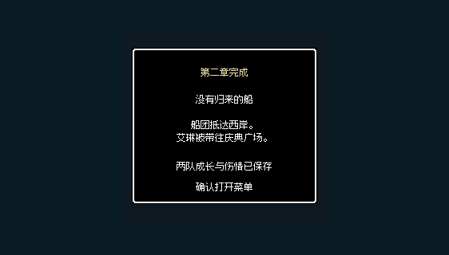
1500项规则及连通检查、675项修改范围检查、220项世界显示与885项据点材质检查通过。24张战斗、21张世界图、7张据点当前实机视口完成后台捕获；文字布局检查无错误。独立应用的40张地图与新资源均与当前源数据一致。
逐关两轮不等于从新游戏完整通关两次。早期F22冲过跳板后主角濒死，F24一次守灯尝试也失败；两份记录均保留。F22测试驾驶随后先守跳板清理主动追击兵，再整队登舰，普通输入两轮完成；F24地图未改，补测通过。未为测试降低敌人属性或改变胜败规则。
连续试玩首轮在F22因治疗者濒死、剩余近战守卫前的保守操作停滞，测试达91回合上限；属于自动操作策略未完成，未将它计作通关。连续验证的最终范围以单独记录为准。未安装手机包；HTML路径检查不等于浏览器布局引擎实测。